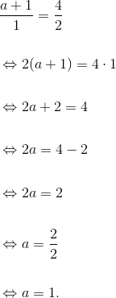

Exerciții și probleme rezolvate de tip Bac pentru profilul științele naturii
- Această problemă a fost dată în sesiunea august - septembrie a anului 2012, pentru profilele științele naturii și tehnologic, la Subiectul I, exercițiul 5.
În reperul cartezian  se consideră punctul
se consideră punctul  . Determinați coordonatele punctului
. Determinați coordonatele punctului  , știind că
, știind că  este mijlocul segmentului
este mijlocul segmentului  .
.
Dacă este mijlocul segmentului , atunci:


Dar  .
.
Atunci


 .
.
- Această problemă a fost dată în sesiunea specială a anului 2012, pentru profilele științele naturii și tehnologic, la Subiectul I, exercițiul 5.
Bacalaureat Matematică 2012 | Științele naturii și Tehnologic | Sesiunea specială | Subiectul I
Într-un reper cartezian  se consideră punctele
se consideră punctele  și
și  . Determinați coordonatele simetricului punctului
. Determinați coordonatele simetricului punctului  față de punctul
față de punctul  .
.
Fie  simetricul lui față de
simetricul lui față de  . Atunci, ne rezultă că este mijlocul segmentului
. Atunci, ne rezultă că este mijlocul segmentului  . Atunci
. Atunci


- Această problemă a fost dată în sesiunea iunie - iulie a anului 2013, pentru profilul științele naturii, la Subiectul I, exercițiul 5.
Bacalaureat Matematică 2013 | Științele naturii | Sesiunea iunie - iulie | Subiectul I
Se consideră punctele  ,
,  și
și  astfel încât
astfel încât  și
și  . Calculați lungimea vectorului
. Calculați lungimea vectorului  .
.


- Această problemă a fost dată în modelul de subiect al anului 2014, pentru profilul științele naturii, la Subiectul I, exercițiul 5.
Bacalaureat Matematică 2014 | Științele naturii | Model de subiect | Subiectul I
Determinați numărul real  pentru care vectorii
pentru care vectorii  și
și  sunt coliniari.
sunt coliniari.
Cum cei doi vectori sunt coliniari, avem că:

- Această problemă a fost dată în sesiunea iunie - iulie a anului 2014, pentru profilul științele naturii, la Subiectul I, exercițiul 5.
Bacalaureat Matematică 2014 | Științele naturii | Sesiunea iunie - iulie | Subiectul I
Determinați numărul real  pentru care dreptele de ecuații
pentru care dreptele de ecuații  și
și  sunt paralele.
sunt paralele.
Fie  și
și  .
.


- Această problemă a fost dată în sesiunea specială a anului 2014, pentru profilul științele naturii, la Subiectul I, exercițiul 5.
Bacalaureat Matematică 2014 | Științele naturii | Sesiunea specială | Subiectul I
În reperul cartezian  se consideră punctele
se consideră punctele  ,
,  și
și  . Calculați aria triunghiului
. Calculați aria triunghiului  .
.


Rezultă că  este isoscel.
este isoscel.
Fie  .
.

Atunci, din teorema lui Pitagora avem că:


- Această problemă a fost dată în sesiunea august - septembrie a anului 2015, pentru profilul științele naturii, la Subiectul I, exercițiul 5.
Bacalaureat Matematică 2015 | Științele naturii | Sesiunea august - septembrie | Subiectul I
Determinați numărul real  , știind că vectorii
, știind că vectorii  și
și  sunt coliniari.
sunt coliniari.
Vectorii  coliniari, dacă și numai dacă:
coliniari, dacă și numai dacă:

- Această problemă a fost dată în sesiunea iunie - iulie a anului 2015, pentru profilul științele naturii, la Subiectul I, exercițiul 5.
Bacalaureat Matematică 2015 | Științele naturii | Sesiunea iunie - iulie | Subiectul I
În reperul cartezian  se consideră punctul
se consideră punctul  . Determinați ecuația dreptei
. Determinați ecuația dreptei  care trece prin punctul
care trece prin punctul  și este paralelă cu dreapta de ecuație
și este paralelă cu dreapta de ecuație  .
.
Notăm  și este dreapta ce trece prin punctul si este paralela cu
și este dreapta ce trece prin punctul si este paralela cu  .
.
Deci  și
și  . Panta dreptei este
. Panta dreptei este  .
.

Dar  .
.
Cum , rezultă că  .
.


Pentru a vedea în plus alte probleme de tip Bac în care apar elemente de geometrie, te sfătuim să accesezi cu încredere unul dintre eBook-urile următoare, Subiectul I, problema 5:
Bacalaureat Matematică 2012 | Științele naturii și Tehnologic | Model de subiect | Subiectul I
Bacalaureat Matematică 2012 | Științele naturii și Tehnologic | Sesiunea iunie - iulie | Subiectul I
Bacalaureat Matematică 2013 | Științele naturii | Model de subiect | Subiectul I
Bacalaureat Matematică 2013 | Științele naturii | Sesiunea august - septembrie | Subiectul I
Bacalaureat Matematică 2013 | Științele naturii | Sesiunea specială | Subiectul I
Bacalaureat Matematică 2014 | Științele naturii | Sesiunea august - septembrie | Subiectul I
Bacalaureat Matematică 2015 | Științele naturii | Sesiunea specială | Subiectul I
Bacalaureat Matematică 2016 | Științele naturii | Model de subiect | Subiectul I